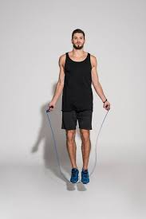

Hello you, yeah you the person behind the screen do you want to lose calories?
Do you
want to show off your cool jumprope techniques? Do you want an excuse not
to go to the gym?
If you said yes to atleast 1 of these things then your on the right website. Welcome to the start
of your new hobby.
The first step:If this is your first time you need to realize theirs a 99.9% chance youll do terrible at first.
Second step:Get a speed rope.
Third step:Flick the handle with your wrists to get a natural rotation of the rope, keep your body, straight, perform small jumps, never jump to
high, never bend knees, look straight, straight posture, and just like that your jumproping like a pro.
Remember its okmn to give up at first beacause you can always pick it up again,
but consistency is key to becoming pro, remember that.

Check out this website for more info below
Qcc